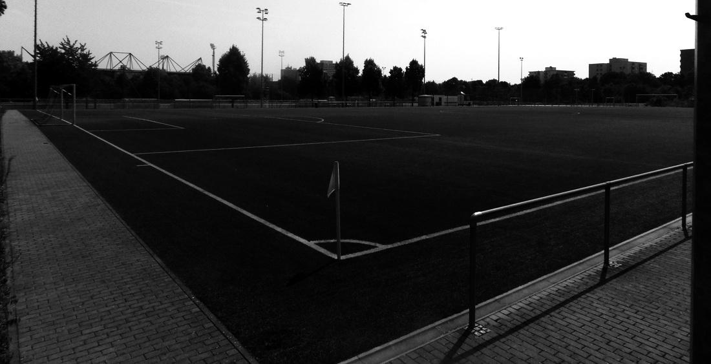

FICHA · ENTRENADOR
FOTO: SCHNEDERPELZ · CC BY-SA 3.0 (MODIFICADA)
RECREACIÓN

CAMPO DE ENTRENAMIENTO DEL MAINZ · 2015 FOTO: AVESPUCCI · CC BY-SA 3.0 (MODIFICADA)FICHA · EQUIPO
BALANZA: DIBUJO
CAMPO EN ROMBO: RECREACIÓN
FICHAS, PELOTAS Y CAMISETA: RECREACIÓN
T. TUCHEL
Fotos: Schnederpelz (CC BY-SA 3.0) y AVespucci (CC BY-SA 3.0), modificadas, vía Wikimedia Commons.
Campo, tijeras, balanza, pelotas y camiseta: recreación.
Campo, tijeras, balanza, pelotas y camiseta: recreación.